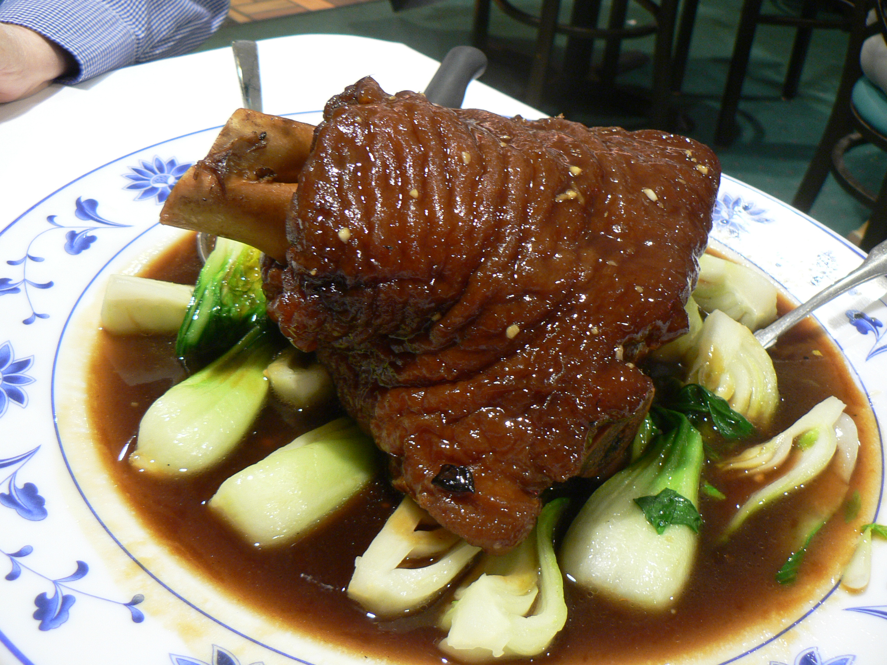

INGREDIENT LIST
***FOR ONE SERVING***
- 1 lb pork hocks
- Dark soy sauce
- Rice wine
- 5-spice powdered mix
- Anise
- Ground black pepper
- A head of garlic
PROCEDURES
- Briefly rinse pork hocks and then pat dry.
- Mix dark soy sauce, rice wine, 5-spice powdered mix, anise, ground black pepper, a head of garlic with water until it covers the pork hocks by about 2 inches.
- Bring to a boil and then simmer for about 2 hours.
- Remove from pot and save the remaining liquid (now having a sauce-like consistency).